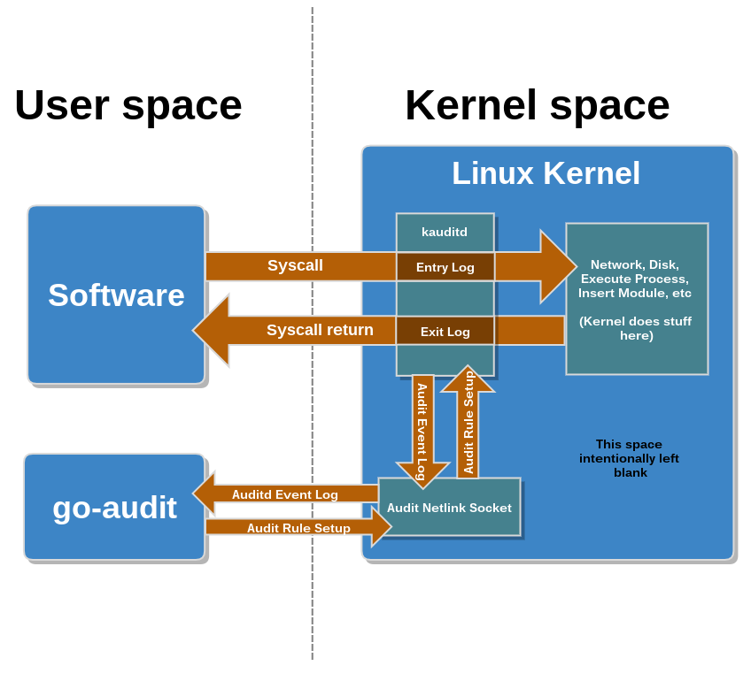
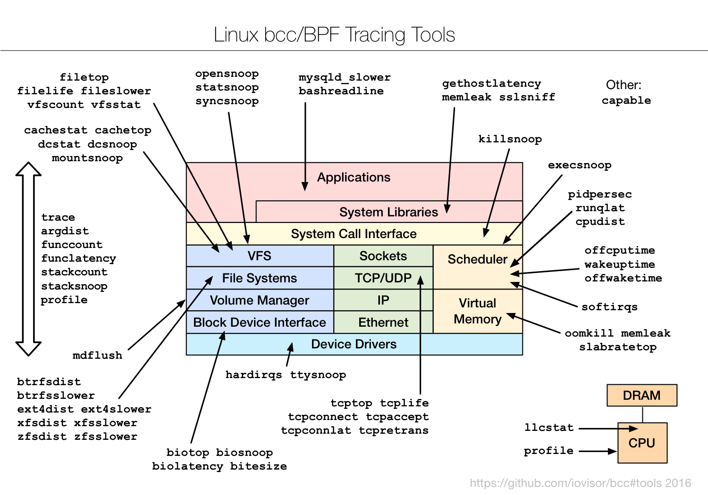

Honeypotting like a sir!
a story of lazyness, incompetence and some infosec
Goals
- Build a high interaction honeypot framework using containers, getting information without modifying application code.
- Warning!: This is a personal project not a Schibsted one
About me
- I moved here 5 years ago, leaving behind awful landscapes for nicer ones
- I never completed my degree because a final project is required. When i moved here, i thought i would have done it in 3 months.
- 5 years later, I finally started to do it.
The search for getting audit info from containers
Use the auditd kernel subsystem, battle-tested tool (since 2.6.x kernels ).

No cgroups and namespaces support :-(
The search for getting audit info from containers
Use new eBPF system with bcc.
